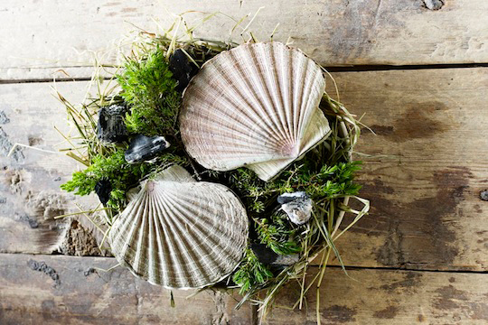
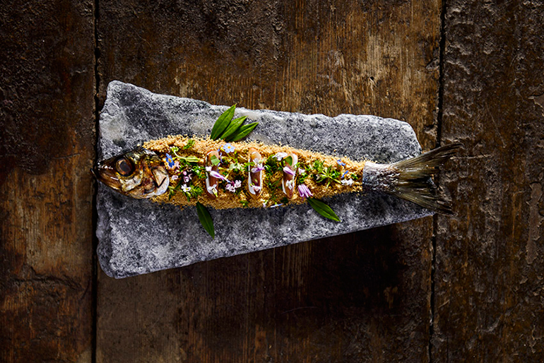
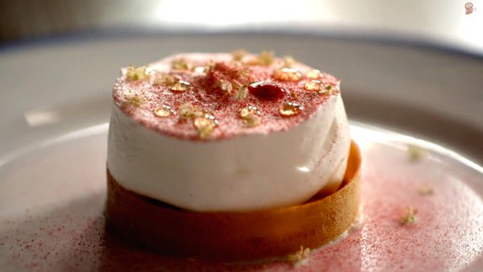

Entrées
- Gratiné d'oignons à la parisienne 75
- Palourdes Royales sur lit d'épinette 80
- Chipolatas de cèpes à l'eau végétale / marmelade d'aubegines 90
- Pièce de foie gras des Landes / gelée chaude de navets / agrumes 100
- Risotto sanguin aux crevettes du Nord Atlantique et betteraves / jeunes pousses d’épinard et jus de citronnade 110
Plats
-

- Vivaneau en croute de sel et épices saisonnières 220
- Noix de riz de veau rissolée en brochette de bois citronelle 120
- Boeuf Kobe Japonais, tapenade de truffes / olives 250
- Spaghettis en timbale truffée / jambon blanc et cèpes 160
- Riz noir légèrement fumé enrichi d'un crémeux de boudin noir / jus de passion 105
- Homard bleu au naturel / sucs de carapaces coraillés à l'huile de noisette 180
Desserts
-

- Friandises et gourmandises de nos pâtissiers 75
- Plateau de fromage 80